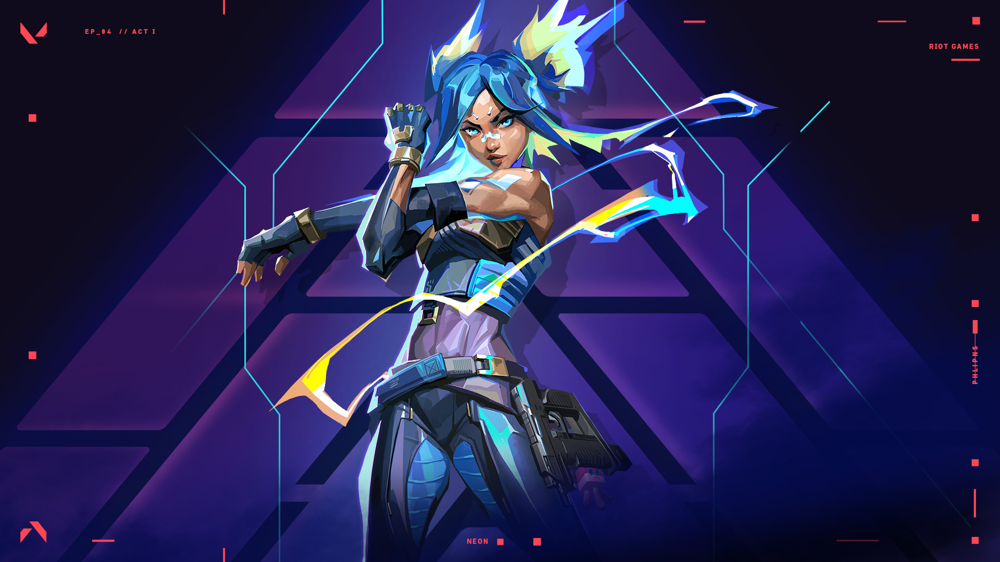

Aplicaciones populares

Conviértete en Mario o Luigi y atraviesa cuevas y castillos, baja por tuberías y
recorre plataformas corriendo y saltando hasta enfrentarte con Bowser para rescatar
a la adorable Princesa Peach.
Si hay una saga de videojuegos capaz de vender las consolas de Microsoft por sí misma, esa es sin duda Halo. Las aventuras del Jefe Maestro
llevan desde el 2002 haciéndonos disfrutar de un apasionante mundo de ciencia ficción, momentos épicos e irrepetibles, y de un multijugador que revolucionó a la
industria popularizando el juego online en consolas, territorio que hasta el lanzamiento de Halo: Combat Evolved apenas se había explorado.
El juego tiene dos modos: una versión para uno o varios jugadores de tipo
jugador contra entorno (jce) llamada Salvar el mundo y la inmensamente popular
versión multijugador de tipo jugador contra jugador (jcj) conocida como
Battle Royale.
Hogwarts Legacy es un videojuego de rol y aventuras en tercera persona desarrollado por Warner Bros. Games y Avalanche para consolas y PC.
El título nos traslada al universo de Harry Potter a través de una experiencia inmersiva de mundo abierto ambientada a finales del siglo XIX,
invitándonos a explorar y descubrir bestias fantásticas, personalizar nuestro personaje y elaborar pociones, dominar el lanzamiento de hechizos
y desentrañar qué misterios se ocultan en Hogwarts.
Este juego no tiene historia; te encuentras solo en un mundo, donde puedes hacer lo que quieras.
Aunque, en primera instancia, hay que sobrevivir. El jugador tiene la posibilidad de explotar
su creatividad con grandes construcciones y mecanismos.
Juegos populares

Resident Evil 4 Remake es la reimaginación del clásico juego de acción y terror en tercera persona desarrollado por Capcom
para PlayStation 4 y 5, Xbox One, Xbox Series S y X y PC. Se trata de la puesta al día del survival horror de la saga Resident
Evil lanzado en 2005, una ambiciosa puesta al día a nivel jugable y gráfico que nos devuelve a Leon S. Kennedy en su viaje a un
récondito pueblo de España en su rescate de la hija del presidente de Estados Unidos.

Todo comienza cuando un grupo de fantasmas secuestran a seis de los amigos y familiares
de la bola amarilla. Por lo que su misión es ir a la misteriosa isla fantasma para salvarlos
del malvado Toc-Man. Una extraña versión metálica de nuestro protagonista.

Grand Theft Auto V para PS4 y Xbox One es una versión mejorada y ampliada del videojuego de acción en mundo abierto Grand
Theft Auto V desarrollado por Rockstar lanzado en 2013. Esta versión del éxito, más ambiciosa técnicamente, presenta gráficos
y nuevo contenido como armas, vehículos o misiones, además de una banda sonora ampliada y más jugadores en el modo online.
Vuelve a presentarnos la historia de Michael, Franklin y Trevor en la ciudad de Los Santos y sus alrededores, una de las más
celebradas de la historia del videojuego.

Sonic vuelve a estar de moda. SI bien es verdad que el erizo azul de SEGA siempre
ha estado en primera plana del sector, el paso a las nuevas generaciones de consolas
le han hecho perder tanto personalidad como relevancia.
Marvel's Spider-Man 2 es la segunda parte del exitoso videojuego Marvel's Spider-Man, desarrollado para PlayStation 5 por parte de
Insomniac Games. En esta ocasión, esta secuela, basada en el personaje de Marvel Cómics, se nos contará cómo Peter Parker y Miles
Morales, los trepamuros que defienden Nueva York, luchan contra el peligroso Venom y Kraven el Cazador, dos villanos dispuestos a
poner las cosas difíciles.
En Destaque
La historia de ‘The Legend of Zelda: Breath of the Wild’ da comienzo con Link
despertando de un sueño de cien años. Desorientado y con la única ayuda de una
voz que le guía en sus primeros pasos, el protagonista de esta historia empieza
a ser consciente de que el mal reina en Hyrule y de que, tal y como ya intentó
cien años atrás con la ayuda de la princesa Zelda y de otros cuatro elegidos, deberá acabar con él.
Es la versión extendida y mejorada del exitoso videojuego del rol japonés producido por ATLUS para consolas. La quinta
entrega tiene ahora una nueva edición que, si bien nos sigue contando una épica historia en la que un grupo de estudiantes
adolescentes tendrán que enfrentarse a una amenaza sobrenatural gracias a sus Persona, unos alter ego especiales,
añadirá nuevas zonas, personajes y características jugables.

Plantas vs Zombies fue un juego muy famoso creado por la compañía PopCap Games en el 2009.
En el que consistía de una temática muy original de defender tu casa con plantas vivientes
de los tenebrosos zombies. Cada planta tiene su habilidad especial ya sea congelar,
quemar, disparos múltiples y defensas hacia los zombis.
Elden Ring es el nuevo videojuego de rol, aventura y acción de FromSoftware y Bandai Namco. Ideado por Hidetaka Miyazaki y
George R.R. Martin, el escritor de Canción de hielo y fuego, nos llevará a un mundo convulso, complejo y sangriento. En esta
ocasión, el equipo de Dark Souls ha aumentado la escala del título, trasladando y depurando su conocida jugabilidad a una nueva
dimensión. Personalización, armas, armaduras y objetos mágicos se darán la mano con una desafiante dificultad, jefes finales y
criaturas horripilantes.
Una palabra que define muy bien a Angry Birds es simplicidad. En este juego unos
cerdos de color verde han hurtado unos huevos de un nido y las aves están furiosas.
En cada uno de los cientos (sí, cientos) de niveles, tendrás que ayudar a las aves
a destruir a los cerdos que se encuentran detrás de endebles estructuras de diversos
materiales; para lograrlo será necesario usar una resortera en determinando ángulo y
con una fuerza particular para lanzar estos pájaros de manera adecuada.
Novedades
Red Dead Redemption 2 es la secuela del videojuego de éxito de Rockstar Red Dead Redemption (2010), considerado como uno de los
mejores títulos de la compañía. Se trata de la tercera entrega de la saga Red Dead, iniciada en 2004 con Red Dead Revolver y nos
trasladará de nuevo al Salvaje Oeste para ponernos en el escenario de mundo abierto más grande jamás creado por los padres de
Grand Theft Auto y contarnos una historia sobre forajidos, venganza y atracos en un escenario de gran realismo en PlayStation 4 y
Xbox One.
Utilizado por más de 1 millón de personas, Organizze es una herramienta en línea que le
facilitará la vida financiera.
Es el nuevo videojuego para Nintendo Switch de la saga de juegos de The Legend of Zelda, secuela directa de Breath of the Wild.
Protagonizada por Link, y con una jugabilidad basada en la acción y el rol en mundo abierto, esta aventura nos devuelve a Hyrule
con una búsqueda de la Princesa Zelda que cuenta con mecánicas de fusión de objetos y armas más avanzadas, nuevas zonas por
explorar en los cielos y mucho más.
Crash Bandicoot: N. Sane Trilogy se encuentra en un limbo extraño en el que la comunidad
de videojugadores no termina por definir si se trata de un remake o una remasterización.

Super Mario Racing
Juego Super Mario Racing. ¡Elige tu personaje favorito del Universo Super Mario y luego
acelera!
Es un juego de combate multijugador en el que se enfrentan 2 equipos de 5 integrantes.
El objetivo del combate es la destrucción del nexo enemigo, elemento que permite la
conexión entre los jugadores y los personajes de acción.

El Valorant ha tenido un éxito innegable. Aunque no sea el tema más hablado en las conversaciones
sobre juegos, su escena de Esports es próspera y la comunidad sigue creciendo,
tanto en Argentina como en el resto del mundo. Incluso pueden visitar Valorant Tiktok
e ver que hay influencers específicos para la escena, que comparten sus alineaciones de Viper,
experiencias tóxicas con otros jugadores, fallos graciosos y jugadas buenísima
Hablar sobre Street Fighter durante su lanzamiento era verdaderamente complicado.
Por un lado tenías un sensacional juego de peleas con un gran core gameplay y
por el otro, un título escueto en cuanto a contenido que se sentía incompleto y
pensado para sacarle más dinero al usuario de manera injusta.
Luigi debe avanzar en el interior de la casa, de habitación en habitación, resolviendo misterios sobre la marcha.
Enseguida Luigi se topa con algunos de los fantasmales habitantes de la mansión. Los fantasmas tienen muchas
formas y tamaños y bastante personalidad.
La serie Super Smash Bros. es una de las joyas de la corona de Nintendo. Por esto, cada vez que una nueva entrega
es anunciada es normal que la comunidad se llene de hype. Dicho esto, parece que cada miembro de la comunidad
lo hace por razones diferentes.